Penthouse HQ
The crew lives in a glass penthouse at dusk on top of a tower: walnut, brushed brass, warm lamps, and the Nebraska sky through the glass. Each AI is a matte ceramic robot with an HMP-orange light strip that shows what it is doing.
Open the live mockupFilthE picked this option (A). Options B and C were stopped at the pick and not built. The page is a mockup with a 60-second demo loop of example data; nothing is published and nothing reads the real hub yet.
The same page, 2 seconds apart
Research Lead glides from the coffee bar to its reading chair, Right Hand starts toward the front with a question, and the needs strip picks it up.
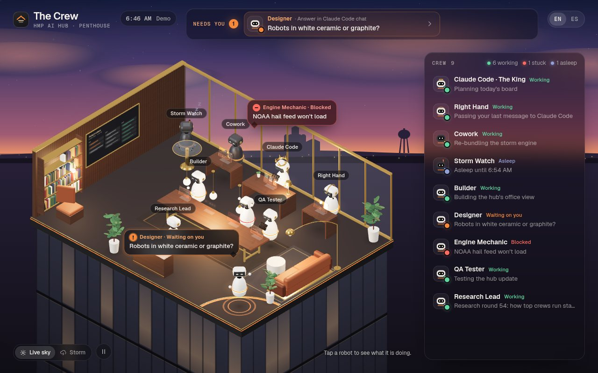
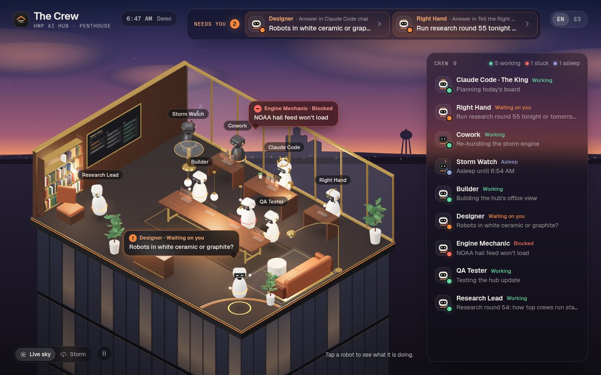
390 px, no sideways scroll
On the phone the needs list comes first, then the room, then the crew. Tap a robot or a row and its card slides up.
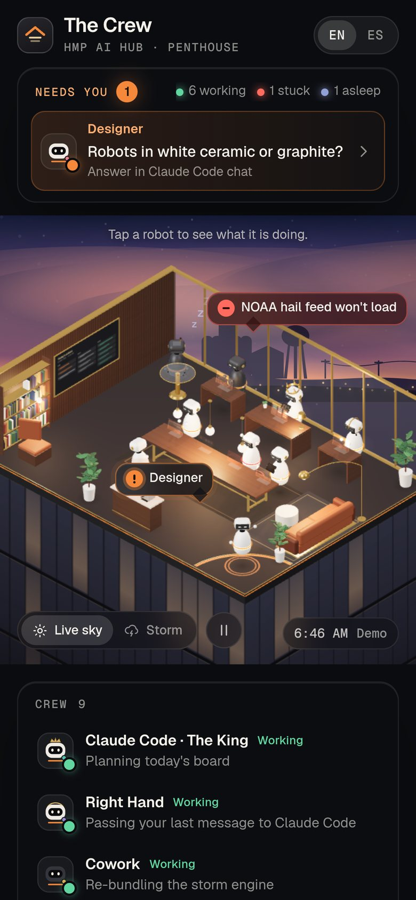
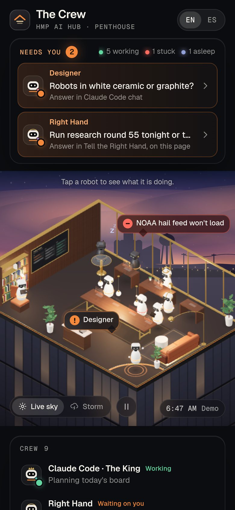
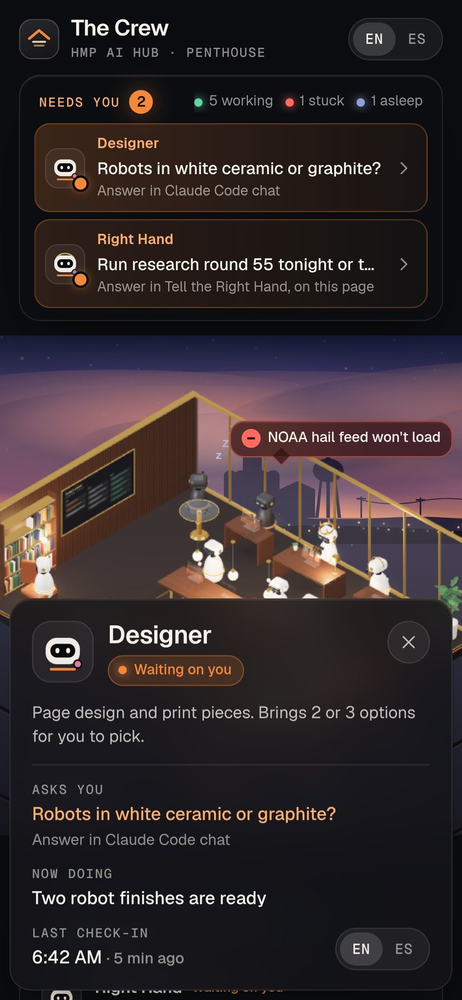
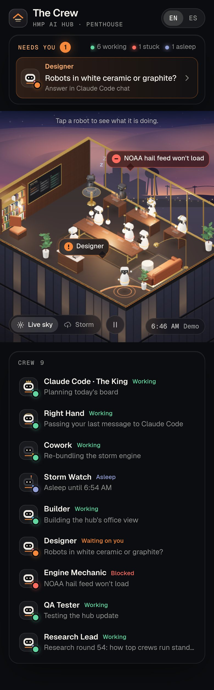
What each robot does
- On a breakHovers with a slow breathing light, looks around, blinks, drifts between the sofa, the window and the coffee bar.
- WorkingGlides to its station. Types on a glass keyboard under a glowing screen, reads a tablet, or watches the radar. A light runs around its strip.
- Waiting on youGlides to the front corner, rises, waves, pulses an orange ring, and shows its one-line ask. It also lands in the "Needs you" strip.
- BlockedStays at its station, head down, strip turns red, red bubble with the reason.
- Just finishedSpins, hops, a burst of brass sparks, then a coffee (with steam) and a sit on the sofa.
- AsleepSinks low, eyes dim to a line, slow light, floating "z". Storm Watch sleeps until 6:54 AM, then wakes and scans.
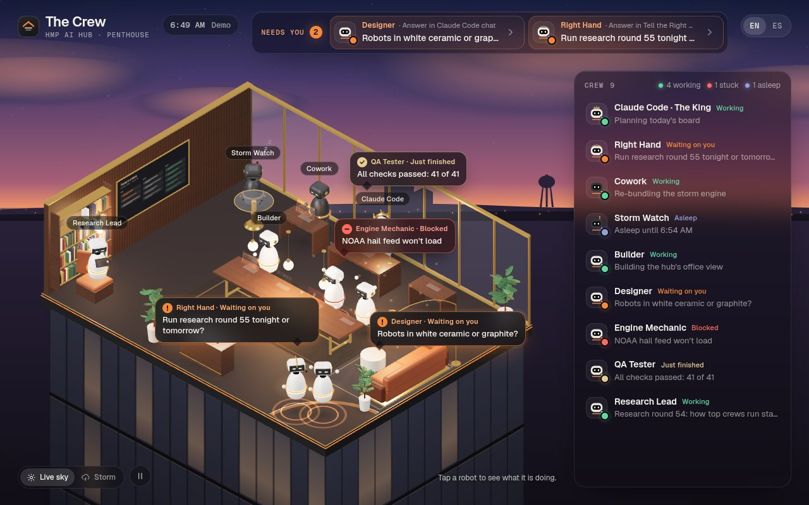
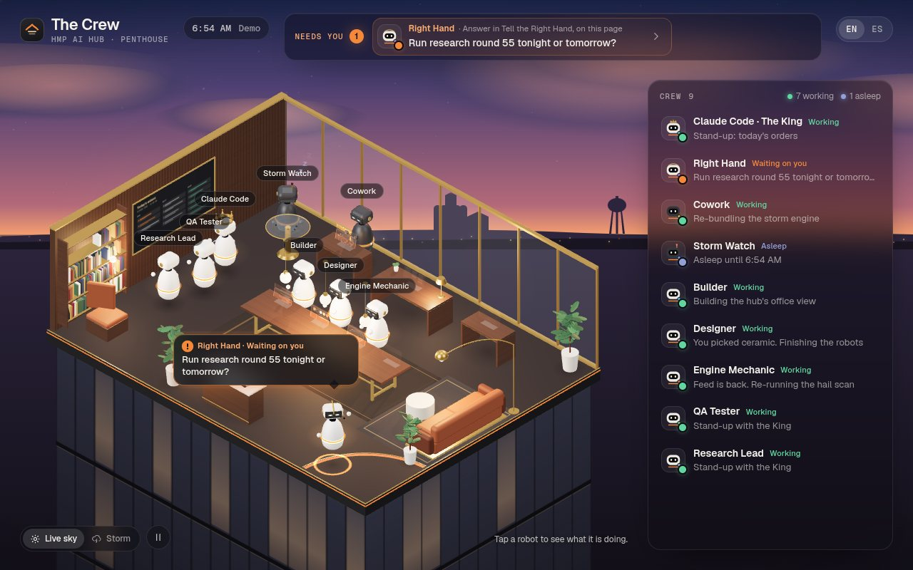
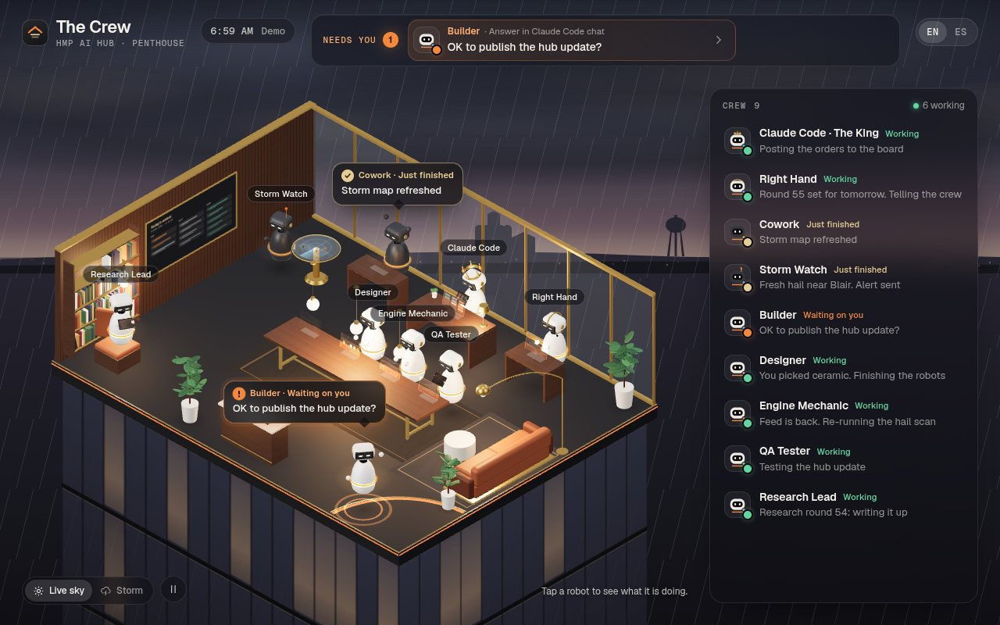
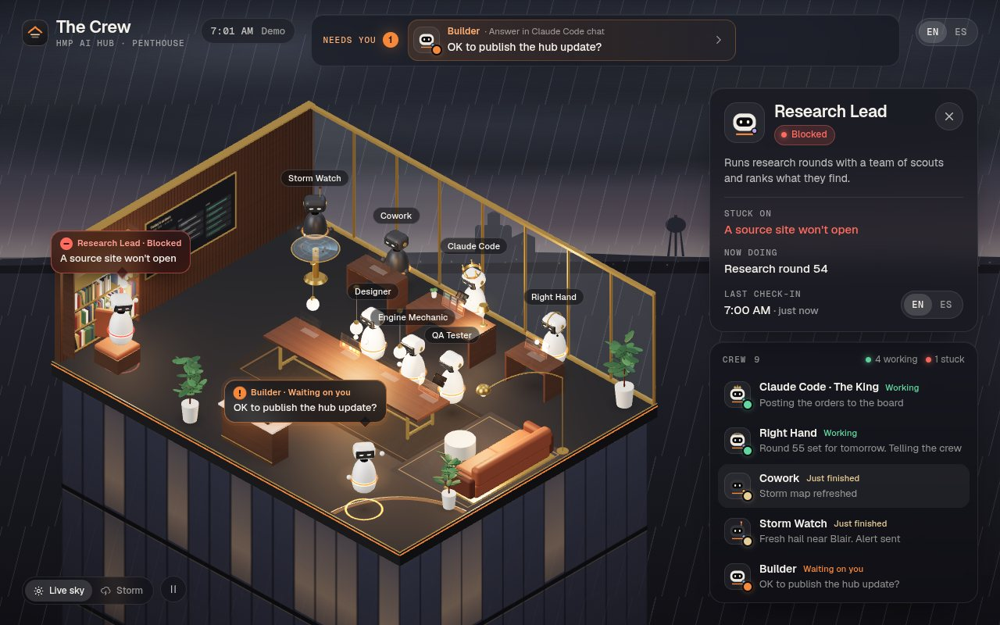
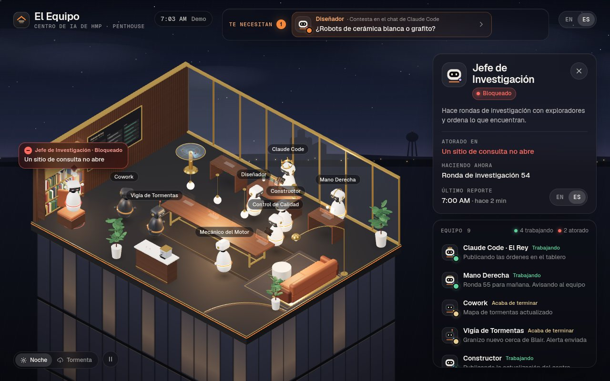
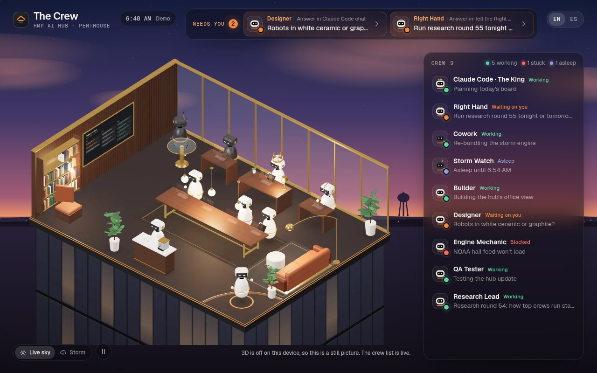
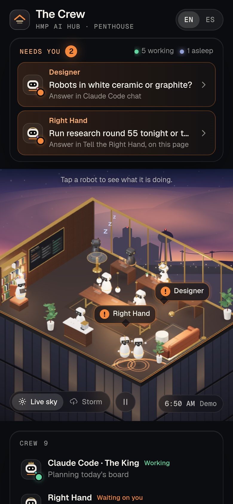
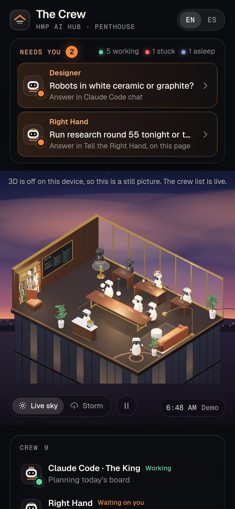
How it plugs into the hub
- Hub only: the crew, their work, the board and "needs you". Nothing from the HMP App (no leads, doors, claims, money, app links or app chat).
- Each robot reads the hub's
agents/<id>doc:statuspicks the behavior,doingandatfill the card, a waiting ask and "answer in" line fill the strip. The demo loop (SCRIPTin the page) is the only mock data. - Sky is mood only: "Live sky" follows the time in Fremont (Central); it turns stormy when Storm Watch reports fresh hail. Dusk, Night and Day are there to preview.
- three.js r169 (MIT) loads from cdn.jsdelivr.net. All art is drawn in code in the page. If WebGL or the CDN is missing, the page shows the built-in still picture after 6 s.
- Phone speed: static furniture merged by material (about 220 draw calls a frame), pixel ratio capped at 1.75 on phones and lowered if frames run long, rendering pauses when the room is scrolled off screen.